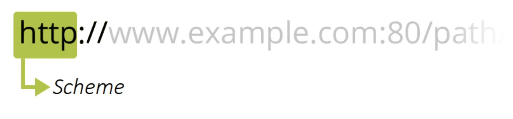
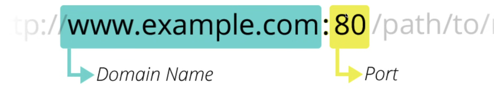

HTTP URL
- URL singkatan dari Uniform Resource Locator
- URL merupakan alamat dari sebuah resource di Web
- URL wajib kita gunakan untuk menuju informasi resource yang akan kita tuju dalam Web
- Tanpa URL, Client atau Server tidak akan mengerti informasi yang ingin kita cari
Anatomi URL
- URL terdiri dari beberapa bagian
- Beberapa bagian wajib ada, beberapa bagian tidak wajib ada
-
Berikut adalah contoh URL :
Schema
- Bagian awal di URL adalah schema yang mengindikasikan protocol yang perlu digunakan oleh Client
- Biasanya dalam URL website, schema protocol tersebut adalah http dan https

Authority
- Selanjutnya, dipisahkan dengan tanda // di ikuti dengan authority, yang terdiri dari nama domain dan nomor port yang dipisah menggunakan titik dua
- Nama domain nanti akan ditanyakan ke DNS untuk mendapatkan alamat IP-nya
- Namun kita juga bisa langsung menggunakan IP jika memang website tersebut tidak memiliki nama domain
- Nomor port tidak wajib, tanpa nomor port, secara default bernilai 80 untuk http, dan 443 untuk https

Back